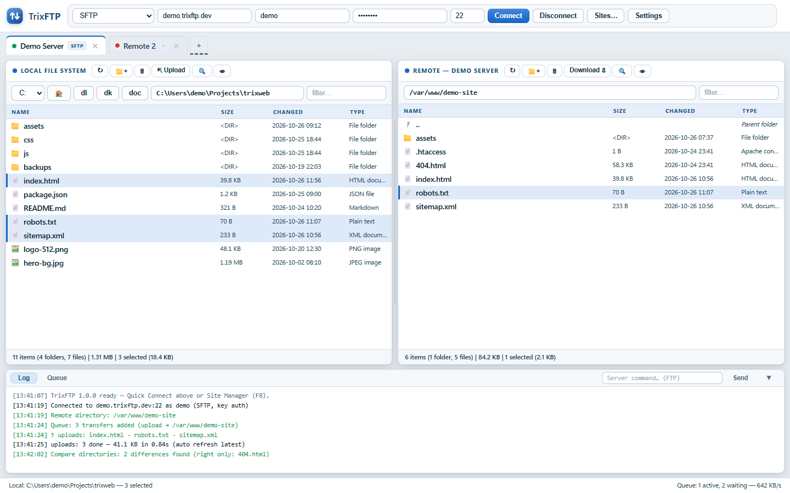
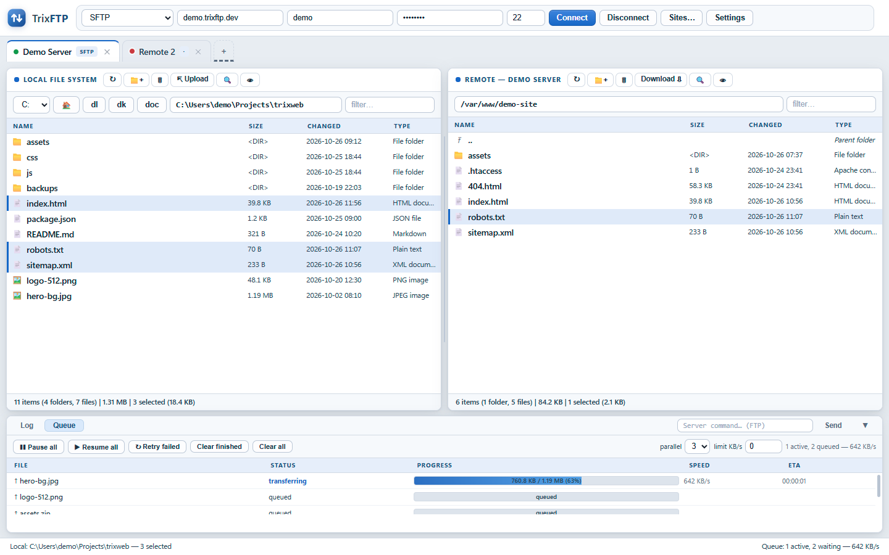
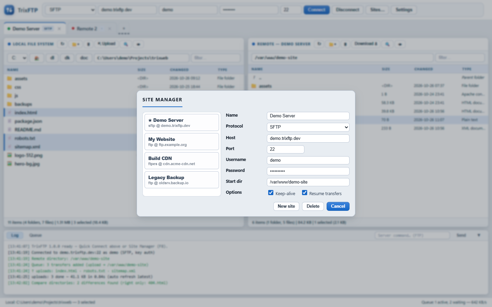

TrixFTP is a modern dual-pane file transfer client with a live queue, site manager, drag & drop, resume, speed limits and automatic reconnection — rebuilt from zero to be fast, stable and honest about what it does.

Familiar dual-pane workflow, dressed in a clean dashboard UI — with the engine bits done right.
Local left, remote right. Sorting, filtering, hidden files, multi-select, directory compare.
Up to 6 parallel transfers, pause/resume all, retry failed, live speed & ETA per job.
If a session drops, queued jobs re-bind to any live session or open a fresh connection with saved credentials.
Store hosts with encrypted passwords (OS keychain via safeStorage) and jump in with one click.
Drop files or whole folders from Explorer onto either pane — conflicts handled gracefully.
Ask / overwrite / skip / resume — with “apply to allâ€, rename suggestions and cancel.
Throttle transfers in KB/s per queue so browsing stays snappy.
Type-ahead jump-to-letter, F5 refresh, Ctrl+S sites, F8 everywhere the coder in you expects it.
All data in these screenshots is demo data — no real servers involved.
One window, two panes, full column info (size, mtime, type) and instant filters.
Progress, speed and ETA for every job. Pause everything, retry failures, clear finished — and the queue keeps working across reconnects.

Store as many servers as you need. Passwords are protected with your OS storage (DPAPI on Windows, keychain elsewhere).

Real native installers built with electron-builder. Unsigned builds — SmartScreen may ask, choose “Run anywayâ€.
Runs on Electron 37 · engines: basic-ftp for FTP/FTPS · ssh2 for SFTP · original UI code · MIT licensed.